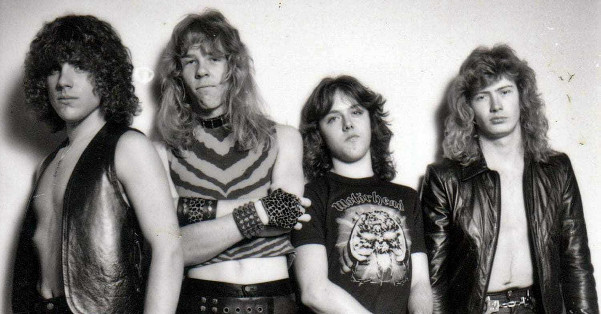
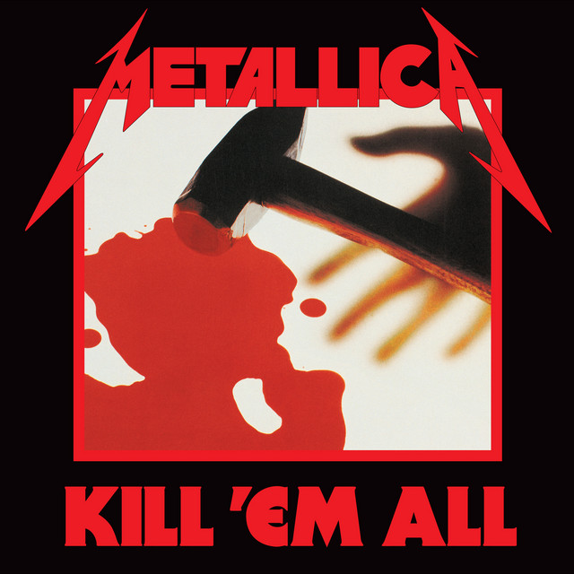
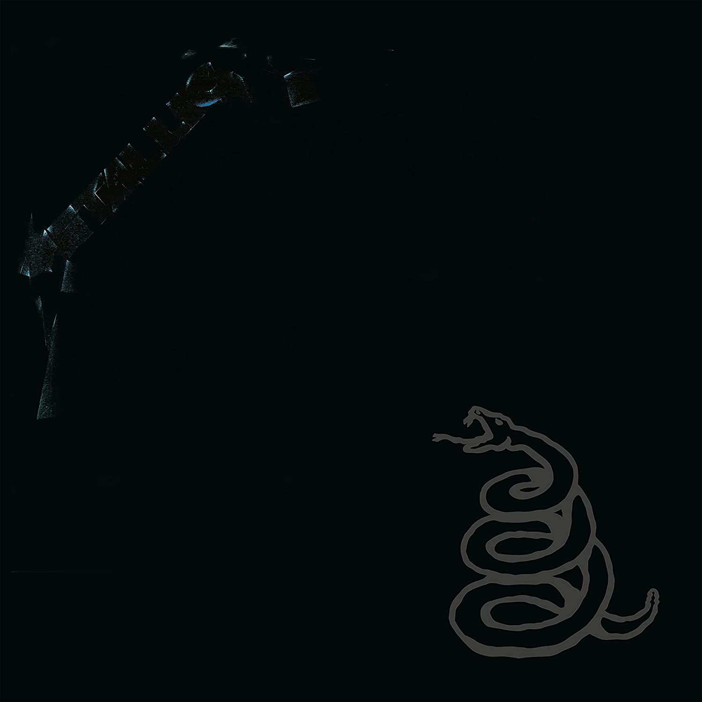
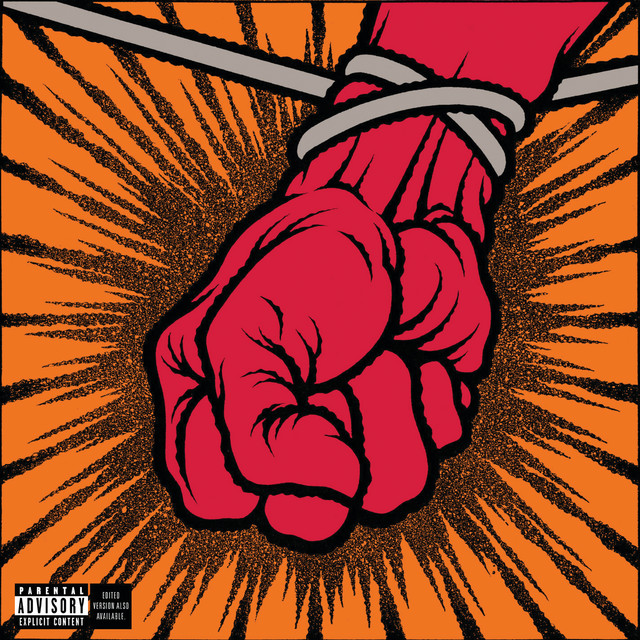
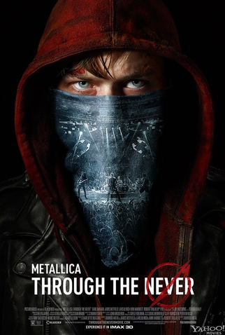
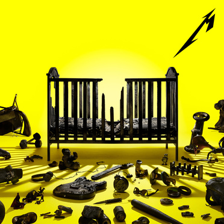

A História do Metallica
A história de uma das bandas mais famosas e influentes do heavy metal começa em 1981, quando o baterista Lars Ulrich colocou um anúncio no jornal Recycler de Los Angeles procurando músicos para formar uma banda. Ele conheceu o guitarrista e vocalista James Hetfield e juntos recrutaram o guitarrista Dave Mustaine e o baixista Ron McGovney.
Primeira formação do Metallica
A banda se chamou Metallica e começou a tocar em clubes e festivais locais. Em 1982, eles gravaram a sua primeira demo, chamada No Life 'til Leather. Nesse mesmo ano, eles trocaram de baixista, entrando Cliff Burton no lugar de McGovney. Burton convenceu os outros membros a se mudarem para São Francisco, onde a cena metal era mais forte.
Em 1983, o Metallica lançou o seu primeiro álbum oficial, Kill 'em All, que foi um sucesso entre os fãs de metal. O álbum mostrava um estilo rápido, pesado e agressivo que ficou conhecido como thrash metal. Nesse mesmo ano, a banda demitiu Mustaine por problemas de drogas e brigas internas e contratou Kirk Hammett para substituí-lo.
Capa do álbum Kill'em all
O Metallica continuou a lançar álbuns aclamados pela crítica e pelo público nos anos seguintes: Ride the Lightning (1984), Master of Puppets (1986) e ...And Justice for All (1988). Esses álbuns consolidaram a banda como uma das maiores do gênero e expandiram os seus horizontes musicais com elementos mais melódicos e progressivos.
Em 1986, a banda sofreu um grande choque com a morte de Cliff Burton em um acidente de ônibus na Suécia durante uma turnê europeia. A banda quase acabou com essa tragédia, mas decidiu continuar em homenagem ao amigo. Eles escolheram Jason Newsted para ocupar o posto de baixista.
Em 1991, o Metallica lançou o seu álbum mais vendido até hoje: Metallica (também conhecido como Black Album). O álbum marcou uma mudança no som da banda, que ficou mais simples, acessível e comercial. O álbum teve vários hits como Enter Sandman, Nothing Else Matters e The Unforgiven.
Capa do álbum Metallica (Ou Black Album)
Nos anos 90, o Metallica experimentou vários estilos musicais diferentes em seus álbuns: Load (1996) e Reload (1997) tinham influências de rock alternativo e blues; Garage Inc. (1998) era um álbum duplo de covers; S&M (1999) era um álbum ao vivo com uma orquestra sinfônica.
Em 2000, a banda entrou em conflito com o Napster por causa da pirataria online de suas músicas. Eles processaram o site e pediram que os seus fãs fossem banidos do serviço. Essa atitude gerou muitas críticas negativas à banda por parte dos fãs e da mídia.
Em 2001, Jason Newsted saiu da banda por motivos pessoais e profissionais. A banda ficou sem baixista por algum tempo até contratar Robert Trujillo em 2003. Nesse mesmo ano, eles lançaram o seu álbum mais polêmico: St. Anger. O álbum tinha uma produção ruim, um som agressivo e sem solos de guitarra. Muitos fãs não gostaram do resultado e consideraram o pior trabalho da banda.
Capa do álbum St. Anger
Em 2008, o Metallica voltou às suas raízes com o álbum Death Magnetic, que foi bem recebido pela crítica e pelos fãs. O álbum tinha músicas longas, complexas e pesadas, lembrando os primeiros trabalhos da banda.
Em 2011, o Metallica fez uma parceria inusitada com o cantor Lou Reed,ex-vocalista do Velvet Underground. Eles lançaram juntos o álbum Lulu, baseado nas obras do dramaturgo alemão Frank Wedek.
Nos últimos dez anos, o Metallica continuou a fazer história no heavy metal com vários projetos e lançamentos. Em 2011, a banda celebrou os seus 30 anos de carreira com shows especiais em São Francisco, onde tocaram músicas raras e convidaram ex-membros e amigos.
Em 2013, a banda lançou o seu primeiro filme, Through the Never, que combinava um show da banda com uma história fictícia. Em 2016, a banda lançou o seu décimo álbum de estúdio, Hardwired... to Self-Destruct, que foi aclamado como um retorno à forma da banda.
Poster do filme Trough the Never
Em 2019, a banda lançou o seu segundo álbum ao vivo com uma orquestra sinfônica, S&M2, que celebrava os 20 anos do primeiro S&M.
Em 2020, a banda teve que adiar a sua turnê mundial por causa da pandemia de covid-19 e fez alguns shows online e beneficentes.
Em 2021, a banda anunciou que iria relançar o seu Black Album em uma edição especial de 30 anos com covers de vários artistas e que iria participar do festival The Big Four junto com outras bandas lendárias do thrash metal em 2022.
Em 2023, a ainda lançará o album 72 Seasons, o 12º disco da carreira da banda, e o primeiro em 6 anos. O Metallica também anunciou uma turnê mundial para promover o álbum, que começa em 2023 na Holanda.
Capa do álbum 72 Seasons